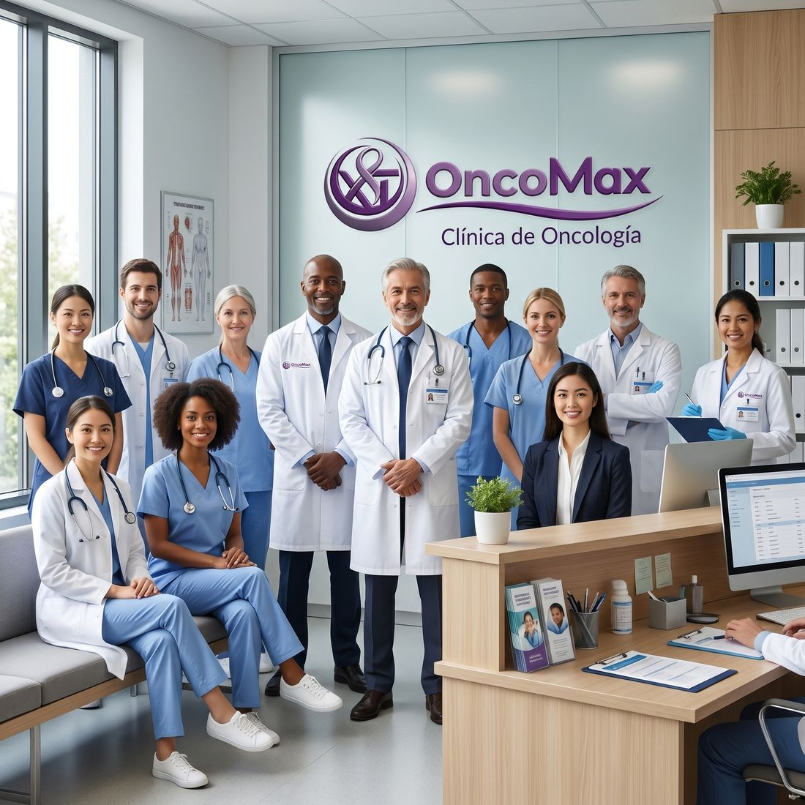

Centro Médico Integral Oncológico · Oruro, Bolivia
Tu lucha es nuestra lucha, cuidamos de ti con el corazón.
En OncoMax brindamos orientación, asistencia médica y acompañamiento humano para pacientes y familias durante todo el proceso de atención.

-
Atención cercana
Explicamos cada paso con palabras claras y sin apuros.
El paciente recibe información comprensible sobre su situación, puede preguntar todas las veces que necesite y decide acompañado del profesional.
-
Equipo especializado
Oncología médica, quirúrgica y pediátrica en un mismo lugar.
Doctores y enfermeras trabajan de forma coordinada, así el paciente no tiene que repetir su historia en cada consulta.
-
La familia también cuenta
Acompañamos a quienes cuidan al paciente.
Damos orientación a familiares y amigos para que sepan cómo ayudar, cómo escuchar y cómo cuidarse ellos mismos.
02 Recorre el sitio
Qué puedes encontrar aquí
- 01 ServiciosAtención y acompañamiento integral. Conoce las áreas de atención disponibles: oncología pediátrica, oncología quirúrgica y acompañamiento integral.
- 02 Asistencia MédicaEspecialistas y apoyo domiciliario. Revisa a los profesionales, el calendario de atención y los tres pasos para solicitar una consulta.
- 03 NosotrosEl equipo humano de OncoMax. Descubre la historia de la clínica, la galería y la biografía de doctores y enfermeras.
- 04 OncologíaInformación básica sobre oncología. Aprende con mitos y realidades, un cuestionario para autoevaluarte y señales a las que conviene prestar atención.
- 05 Lazos de apoyoMensajes para pacientes y familias. Encuentra frases de aliento y consejos concretos para acompañar con respeto y cariño.
- 06 Reservar citaFormulario de reserva. Elige un servicio, una fecha y deja tus datos de contacto. También encontrarás el croquis para llegar.

03 Dudas comunes
Preguntas frecuentes
¿Tienes otra duda? Escríbenos por WhatsApp y te orientamos.
¿Necesito una cita para recibir orientación?
Sí, puedes solicitarla desde la página Reserva o comunicarte por WhatsApp.
¿OncoMax atiende a niños?
Sí, contamos con información y atención de oncología pediátrica.
¿La información del sitio reemplaza al médico?
No. La información del sitio es orientativa; una evaluación siempre debe realizarla un profesional.
¿Puedo ir acompañado a la consulta?
Sí. Recomendamos venir con una persona de confianza que ayude a anotar las indicaciones.
Estamos para ti
Hablemos cuando lo necesites
Escríbenos por WhatsApp o déjanos tus datos y la clínica se comunica contigo.